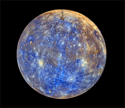

Planetas do Sistema Solar
secão1
- Mercurio
- Salelites: 0
- Orbita Limpa: true
- Atmosfera:42% de oxigênio",29% de gás de sódio, 22% de hidrogênio,6% de hélio, 0,5% de potássio

secão2
- Venus
- Salelites: 0
- Orbita Limpa: true
- Atmosfera:96,5% de dióxido de carbono, 3,5% de hidrogênio"

secão3
- Terra
- Salelites: 1
- Orbita Limpa: true
- Atmosfera: 78% de nitrogênio , 21% de oxigênio

secão4
- Marte_
- Salelites: 2
- Orbita Limpa: true
- Atmosfera:95,3% de dióxido de carbono, 2,7% de nitrogênio, 1,6% de argônio

secão5
- Jupiter
- Salelites: 79
- Orbita Limpa: true
- Atmosfera:75% de hidrogênio,24% de hélio

secão6
- Saturno
- Salelites: 82
- Orbita Limpa: true
- Atmosfera:93,2% de hidrogênio,6,7% de hélio
secão7
- Urano_
- Salelites: 27
- Orbita Limpa: true
- Atmosfera:83% de hidrogênio,15% de hélio e 2% metano

secão8
- Neturno
- Salelites: 14
- Orbita Limpa: true
- Atmosfera:80% de hidrogênio,19% de hélio